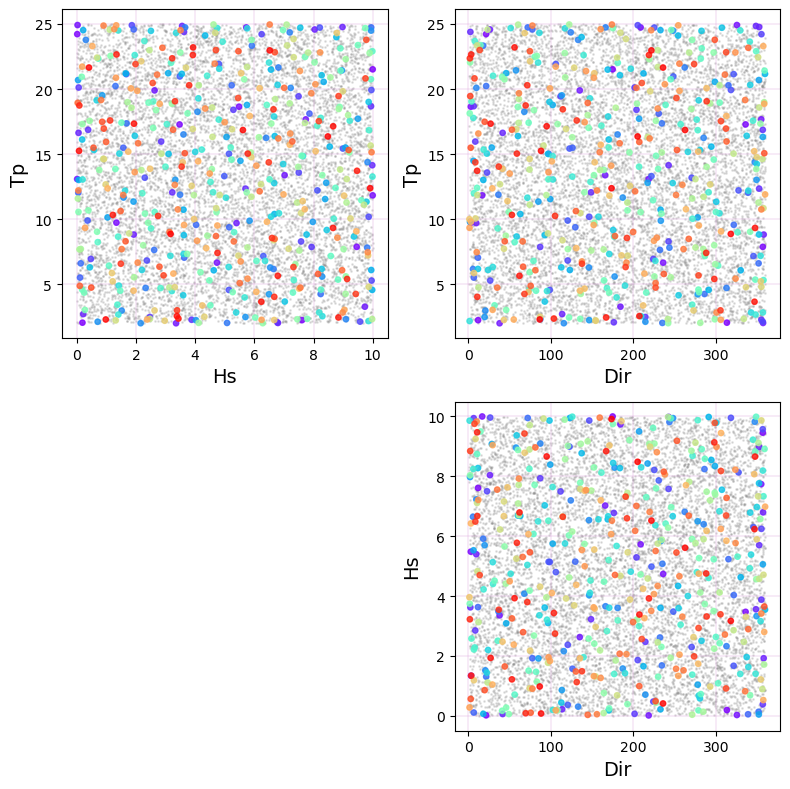

Sampling LHS + Selection MDA#
import os
import sys
import warnings
warnings.filterwarnings('ignore')
from scipy.stats import qmc
import pandas as pd
import numpy as np
from mda import MaxDiss_Simplified_NoThreshold, Normalize
from LHS import *
LHS#
name_dims=['Hs', 'Tp', 'Dir']
n_dims = len(name_dims) #Number of dimensions
lower_bounds = [0, 2, 1]
upper_bounds = [10, 25, 360]
n_samples = 10000 #Number of combinations to extract from LHS
sampler = qmc.LatinHypercube(d=n_dims)
dataset = sampler.random(n=n_samples)
dataset = qmc.scale(dataset, lower_bounds, upper_bounds)
DATASET = pd.DataFrame(dataset, columns=name_dims).to_xarray()
DATASET
<xarray.Dataset>
Dimensions: (index: 10000)
Coordinates:
* index (index) int64 0 1 2 3 4 5 6 ... 9993 9994 9995 9996 9997 9998 9999
Data variables:
Hs (index) float64 9.985 6.161 7.143 4.327 ... 2.579 2.754 5.853 5.071
Tp (index) float64 21.85 24.92 9.199 6.613 ... 19.04 16.2 19.3 16.64
Dir (index) float64 80.86 271.9 330.1 58.8 ... 3.581 290.0 238.2 346.7MDA#
matrix_mda = np.vstack([DATASET.Hs.values, DATASET.Tp.values, DATASET.Dir.values]).T
# subset size, scalar and directional indexes
n_subset = 500 # subset size
ix_scalar = [0, 1] # x,y,z
ix_directional = [2] #
# MDA algorithm
sel = MaxDiss_Simplified_NoThreshold(matrix_mda, n_subset, ix_scalar, ix_directional)
MaxDiss waves parameters: 10000 --> 500
MDA centroids: 500/500
Plot Centroids#
v1, v1_l = matrix_mda[:,0], 'Hs'
v2, v2_l = matrix_mda[:,1], 'Tp'
v3, v3_l = matrix_mda[:,2], 'Dir'
fig = plt.figure(figsize = [8, 8], tight_layout=True)
gs = gridspec.GridSpec(2, 2)
ax = fig.add_subplot(gs[0,0])
ax.scatter(v1,v2,c='grey', s=1, alpha = .2)
ax.set_xlabel(v1_l, fontsize = 14); ax.set_ylabel(v2_l, fontsize = 14)
ax.grid(':', color = 'plum', linewidth=.3)
ax1 = fig.add_subplot(gs[0,1])
ax1.scatter(v3,v2,c='grey', s=1, alpha = .2)
ax1.set_xlabel(v3_l, fontsize = 14); ax1.set_ylabel(v2_l, fontsize = 14)
ax1.grid(':', color = 'plum', linewidth=.3)
ax2 = fig.add_subplot(gs[1,1])
ax2.scatter(v3,v1,c='grey', s=1, alpha = .2)
ax2.set_xlabel(v3_l, fontsize = 14); ax2.set_ylabel(v1_l, fontsize = 14)
ax2.grid(':', color = 'plum', linewidth=.3)
# Selected points
ax.scatter(sel[:,0], sel[:,1], s=15, c=range(len(sel)), alpha=.8, zorder=2, cmap='rainbow')
ax1.scatter(sel[:,2], sel[:,1], s=15, c=range(len(sel)), alpha=.8, zorder=2, cmap='rainbow')
im = ax2.scatter(sel[:,2], sel[:,0], s=15, c=range(len(sel)), alpha=.8, zorder=2, cmap='rainbow')
